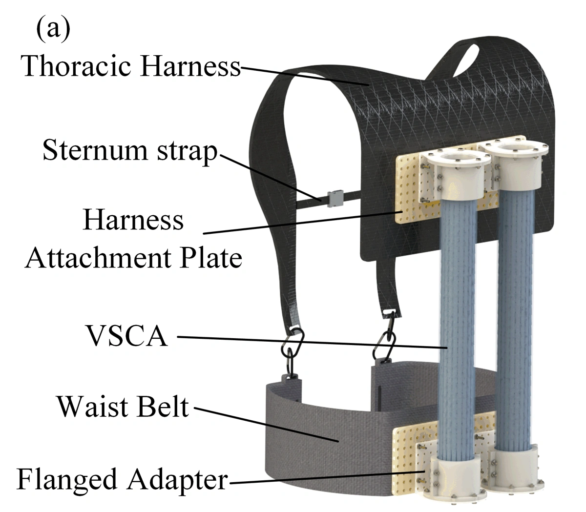
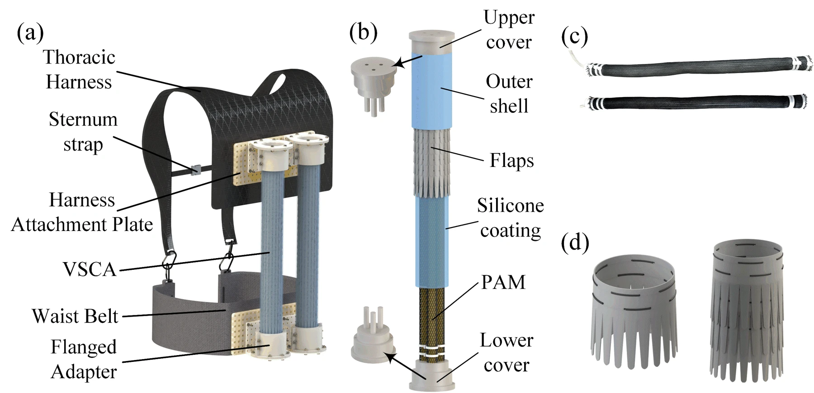
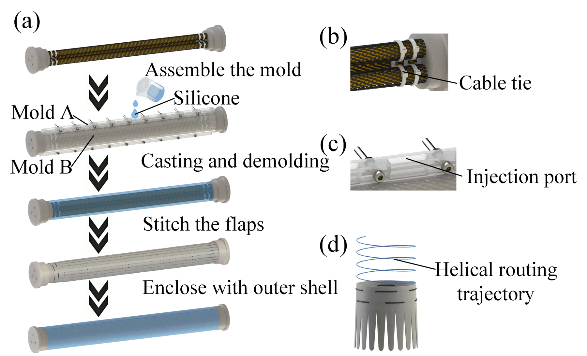
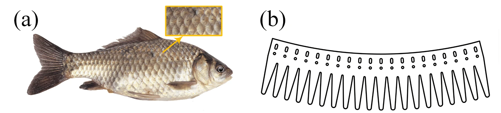
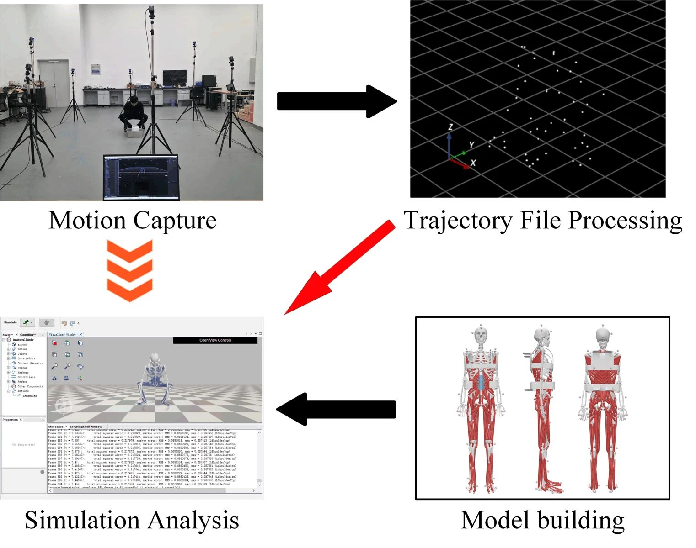
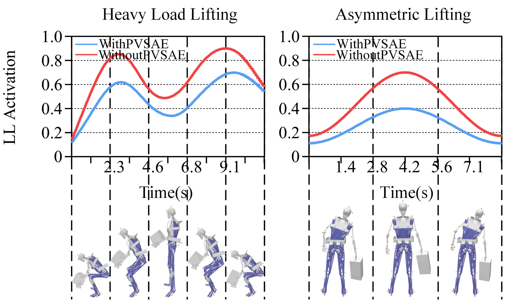
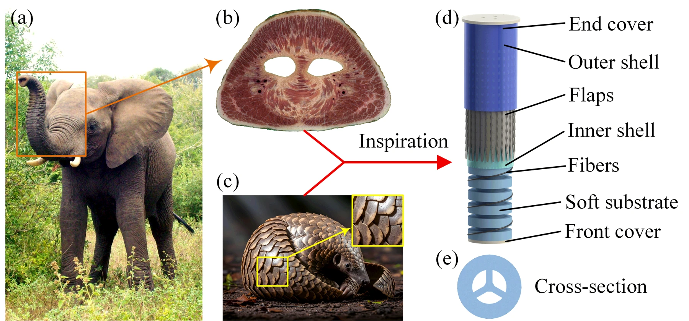

PVSAE 腰椎助力外骨骼
04 / COMPLIANT ASSISTANCE
柔顺与支撑仿生变刚度驱动器
与腰椎助力外骨骼
让柔性结构贴合身体，让可调刚度承担支撑。
从一根驱动器，走近复杂搬运中的人机协同。
VSCA 变刚度驱动器 × PVSAE 并联式外骨骼
PVSAE / 腰椎助力外骨骼研究结构图

FROM ACTUATOR TO ASSISTANCE
柔顺运动，
按需增强支撑。
VSCA 将三根气动人工肌肉、硅胶基体和仿生重叠襟翼封装在同一驱动单元中。正压产生收缩助力，负压增强层间摩擦，调节结构刚度。
两个 VSCA 并联布置于腰背部，连接肩胸固定结构与腰带，构成 PVSAE 外骨骼，用于研究重物搬运和不对称提拉中的腰背肌群卸荷。
最长肌 LL 峰值激活度降幅
最长肌 LL 峰值激活度降幅
数据来源：《手稿激活程度版修改》第 2.2、4.2、5.2 节。降幅对应文中工况与所报告分析，并非所有使用者的通用助力比例。
01 / VARIABLE STIFFNESS ACTUATOR
从仿生襟翼，到可调刚度

三根 PAM：输出收缩力
气动人工肌肉沿圆周分布。充入正压后，编织约束将径向膨胀转化为轴向收缩。
重叠 PET 襟翼：调节刚度
密封夹层抽真空，重叠薄片接触更紧密，层间摩擦增大，抵抗相对滑动与形变。
柔性包覆：一体化集成
硅胶基体包覆内部驱动单元，外层膜与端盖形成密封边界，将助力与刚度调节集于一体。


02 / LUMBAR EXOSKELETON
把驱动能力，转化为腰背助力
肩带、胸带与背部连接板
维持装置与躯干的相对位置，把上端作用力传递至穿戴结构。
左右并联的 VSCA
沿腰背部布置，配合躯干屈曲和侧弯，为复杂搬运提供助力路径。
腰带与法兰连接
下端锚固于腰带，通过骨盆区域形成承重连接，与上部结构共同建立助力回路。

MOTION & MECHANISM
让结构动起来
以上动画由展陈模型生成，用于解释结构与运动关系；并非实机录像、动作捕捉回放或力学求解结果。三维交互中可自行调节动作幅度与拆解程度。
建议观看顺序
整机观察 → 驱动器分层 → 收缩与变刚度原理 → 屈曲 / 侧弯 → 实验对照
RESEARCH EVIDENCE
从仿真预测，到肌电对照

两类任务，两组对照
手稿采用 15 kg 外部负载进行搬运仿真，并比较穿戴与未穿戴外骨骼的肌肉激活度。表面肌电实验招募 10 名受试者，每组动作重复 10 次，并选取代表性平稳试次分析。
| 工况 | 仿真 | 肌电实验 |
|---|---|---|
| 重物搬运 | 27.51% | 24.43% |
| 不对称提拉 | 42.85% | 36.04% |
数据按上传手稿表述呈现；肌电峰值变化不能直接等同于助力力矩或临床疗效。
03 / RELATED RESEARCH
拓展展台：全方位螺旋软体驱动器

ODHA / 独立研究路线
伸长、弯曲与螺旋缠绕
借鉴象鼻的连续变形与鳞片重叠结构，三腔硅胶基体结合 Kevlar 纤维约束，实现空间螺旋变形；PET 襟翼提供负压层阻塞机制。
ODHA 用于展示共形缠绕抓取。它与外骨骼所用的三根 PAM 收缩式 VSCA 结构不同，不在本展台中被视为外骨骼的直接驱动单元。
EXPLORE FURTHER
模型与展品资料
外骨骼三维模型GLB · 比例复原示意↓VSCA 驱动器模型GLB · 分层结构示意↓ODHA 螺旋驱动器模型GLB · 运动构型示意↓ODHA 英文文稿PDF · 上传原文↗展品说明与讲解词结构、原理、资料对应关系↗展馆接入数据JSON · 展品介绍与资源清单↓
模型依据与展示边界
三维模型根据上传论文结构图制作。整体拓扑与关键部件以资料为依据；尺寸比例、隐藏连接件、人体外形、装配间距及动作轨迹为展陈示意。未提供原始 CAD、STL、OpenSim 模型或实验视频，因此本模型不可用于加工、干涉校核、气动控制标定或人体安全验证。界面中的归一化演示参数不表示实测压力、力、位移或刚度。
本展品页面借鉴参考展馆的“概览—模型交互—结构—演示—研究资料”组织方式，为独立制作的组合展品。数据来自上传手稿及补充材料，未据此推断正式发表状态。